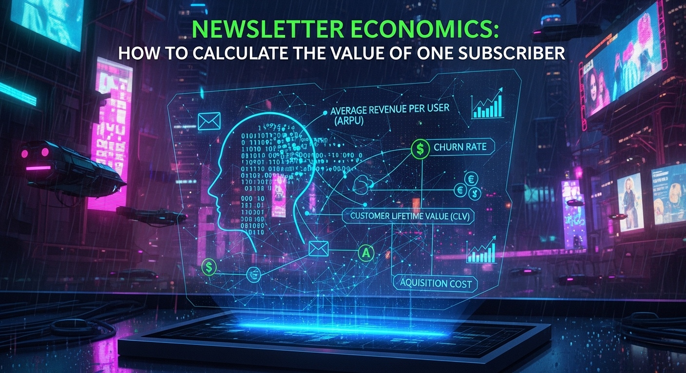

In the vast digital ocean, where attention is a scarce commodity and every click holds potential, the humble email newsletter subscriber often goes undervalued. Many businesses meticulously track open rates and click-through rates, yet few truly grasp the profound economic implications of each individual who opts into their mailing list. This oversight isn't just a missed metric; it's a fundamental misunderstanding of a core business asset. A subscriber isn't merely an email address; they represent a potential stream of revenue, a brand advocate, and a data point for future growth. Understanding the true monetary value of a single subscriber transforms your newsletter from a mere communication channel into a quantifiable, strategic investment. This article will dissect the intricate mechanics of newsletter economics, providing a comprehensive framework to calculate, understand, and ultimately maximize the value inherent in every subscriber.
At the heart of newsletter economics lies the concept of Subscriber Lifetime Value (SLTV). This isn't just a simple calculation of immediate sales; it's a forward-looking projection of the total revenue a subscriber is expected to generate throughout their entire relationship with your brand, net of the costs associated with acquiring and serving them. Think of SLTV as the intrinsic worth of a long-term relationship, quantified. Without understanding this metric, businesses operate in the dark, unable to make informed decisions about marketing spend, content strategy, or even the viability of their entire email program.
Calculating SLTV involves several critical components that need to be meticulously tracked and analyzed. Firstly, you need to determine the Average Revenue Per Subscriber (ARPS) over a specific period, perhaps monthly or annually. This isn't just direct sales; it encompasses all revenue streams directly or indirectly influenced by the subscriber's engagement with your emails. We'll delve deeper into revenue attribution in the next section, but for SLTV, consider the total monetary contribution. Secondly, the Average Subscriber Lifespan is crucial. How long, on average, does a subscriber remain active and engaged with your newsletter before they churn or become inactive? This can be estimated by looking at your churn rate. If your monthly churn rate is 2%, for instance, the average lifespan might be estimated as 1 / 0.02 = 50 months. Thirdly, and often overlooked, are the Customer Acquisition Costs (CAC). How much did it cost to get that subscriber onto your list in the first place? This includes advertising spend, lead magnet creation, landing page development, and any other associated marketing expenses. Subtracting CAC from the projected gross revenue stream gives a more accurate net SLTV.
The simplified formula for SLTV can often be expressed as: SLTV = (Average Purchase Value x Average Purchase Frequency x Average Subscriber Lifespan) - Customer Acquisition Cost. However, this formula assumes direct purchases and might need adaptation for businesses that don't directly sell products via email. A more generalized approach might be: SLTV = (Average Revenue Per Subscriber Per Period x Average Subscriber Lifespan) - Customer Acquisition Cost. Let's break down these elements further. The Average Purchase Value (APV) is straightforward: the typical amount a customer spends in a single transaction. Average Purchase Frequency (APF) refers to how often a subscriber makes a purchase within a given period. The Average Subscriber Lifespan (ASL), as mentioned, is the duration they remain active and valuable. Multiplying these three components gives you the gross revenue expected from a single subscriber. Subtracting the Customer Acquisition Cost (CAC) then provides the net SLTV. For instance, if a subscriber typically spends $50 per purchase, buys 2 times a year, and stays subscribed for 3 years, their gross value is $50 * 2 * 3 = $300. If it cost you $10 to acquire them, their net SLTV is $290. This seemingly simple calculation holds immense power. It allows you to understand how much you can afford to spend to acquire a new subscriber while remaining profitable, guiding your ad spend and lead generation efforts. It also highlights the critical importance of retention; extending the average subscriber lifespan by even a small margin can significantly boost overall SLTV and, consequently, your bottom line. Moreover, SLTV isn't static; it evolves with your business model, content strategy, and market conditions, necessitating regular recalculation and refinement. Ignoring SLTV is akin to navigating a ship without a compass, leaving your email marketing efforts adrift without a clear understanding of their true economic impact.
When calculating the value of a newsletter subscriber, it's tempting to focus solely on direct sales immediately following an email click. However, this narrow perspective dramatically underestimates the true revenue contribution. A holistic understanding requires deconstructing revenue into both its direct and indirect components, acknowledging the complex journey a subscriber takes and the myriad ways email influences their purchasing decisions and overall brand engagement. Ignoring indirect contributions would lead to a significant undervaluation of your email list, potentially causing you to underinvest in a highly profitable channel.
Direct Revenue Contributions are the easiest to track and attribute. These include sales of products or services directly linked to a click-through from an email. This encompasses purchases from promotional emails, subscription sign-ups for paid content, course enrollments, or event ticket sales that originate from your newsletter. Most modern Email Service Providers (ESPs) and analytics platforms offer robust tracking capabilities that allow you to see exactly which emails led to which conversions. By integrating your ESP with your e-commerce platform or CRM, you can track specific transactions back to the originating email campaign, subject line, or even individual link. This data is invaluable for optimizing campaign performance, understanding which types of content drive immediate sales, and refining your calls-to-action (CTAs). For businesses with complex sales cycles, direct revenue might also include qualified lead generation where an email encourages a demo request or a consultation booking that later converts into a sale. The challenge here lies in accurately attributing the final sale to the initial email touchpoint, especially when multiple marketing channels are involved. This often requires sophisticated attribution models, which we will touch upon shortly.
Indirect Revenue Contributions are where the true strategic value of a newsletter often resides, yet they are significantly harder to quantify. These contributions include:
Accurately attributing revenue, especially indirect contributions, requires a robust understanding of attribution models. Simple models like first-click (crediting the first touchpoint) or last-click (crediting the final touchpoint) often fail to capture the newsletter's true influence, especially in a multi-channel marketing environment. A subscriber might discover your brand via social media, sign up for your newsletter, engage with several emails over weeks, then finally make a purchase after seeing a retargeting ad. In a last-click model, the ad gets all the credit, while the newsletter's nurturing role is ignored. More sophisticated models like linear attribution (distributing credit equally across all touchpoints), time decay (giving more credit to recent interactions), or position-based attribution (crediting first and last interactions more heavily) offer a more nuanced view. For newsletters, a multi-touch attribution model is almost always superior, recognizing that email often plays a crucial role in nurturing leads and guiding them through the sales funnel, even if it's not always the final click before conversion. Integrating data from your ESP, CRM, and web analytics platform is essential for building a comprehensive picture of how your newsletter contributes to your overall revenue ecosystem, allowing you to move beyond simplistic metrics and truly understand the economic power of your subscriber base.
Secure your digital wealth with the world's most trusted hardware wallets.
GET YOUR WALLET NOWCalculating the true value of a subscriber isn't just about revenue; it's equally about understanding the costs involved. Many businesses fall into the trap of only considering the most obvious expenses, overlooking a myriad of direct and indirect costs that significantly impact the net Subscriber Lifetime Value (SLTV). A comprehensive cost analysis is paramount for determining profitability, setting realistic budgets, and making informed strategic decisions about where to invest your marketing efforts. Without a clear picture of your acquisition and maintenance expenses, any revenue calculation remains incomplete and potentially misleading.
The first major category of costs is Customer Acquisition Cost (CAC). This represents the total expense incurred to gain a single new subscriber. It's not just the ad spend; it's a sum of all marketing and sales efforts directly related to bringing a new email address onto your list.
Beyond acquisition, there are ongoing Maintenance Costs associated with nurturing and retaining your subscribers. These are often overlooked but are essential for delivering value and keeping subscribers engaged.
While Subscriber Lifetime Value (SLTV) provides a powerful overarching metric, a truly sophisticated understanding of newsletter economics demands diving deeper into advanced metrics and leveraging the power of segmentation. Treating all subscribers as a monolithic entity obscures critical differences in behavior, preferences, and ultimately, value. Advanced analysis allows marketers to uncover hidden patterns, identify high-value segments, and tailor strategies that maximize engagement and profitability from specific groups, moving beyond a one-size-fits-all approach that inevitably leaves potential value on the table.
Segmentation is perhaps the most fundamental advanced strategy. It involves dividing your subscriber list into smaller, more homogeneous groups based on shared characteristics or behaviors. This allows for highly targeted messaging that resonates more deeply with each segment, leading to higher engagement rates and conversion rates. Common segmentation criteria include:
Beyond basic segmentation, several other advanced metrics and analytical techniques offer deeper insights:
In summary, staying ahead of these trends is the key to business longevity and security. By following this guide, you maximize your growth and ensure a stable digital future.
Don't wait for the headlines. Our Private Telegram Channel delivers real-time AI security updates and digital wealth strategies before they go viral. Stay protected. Stay ahead.
⚡ JOIN THE 1% NOW